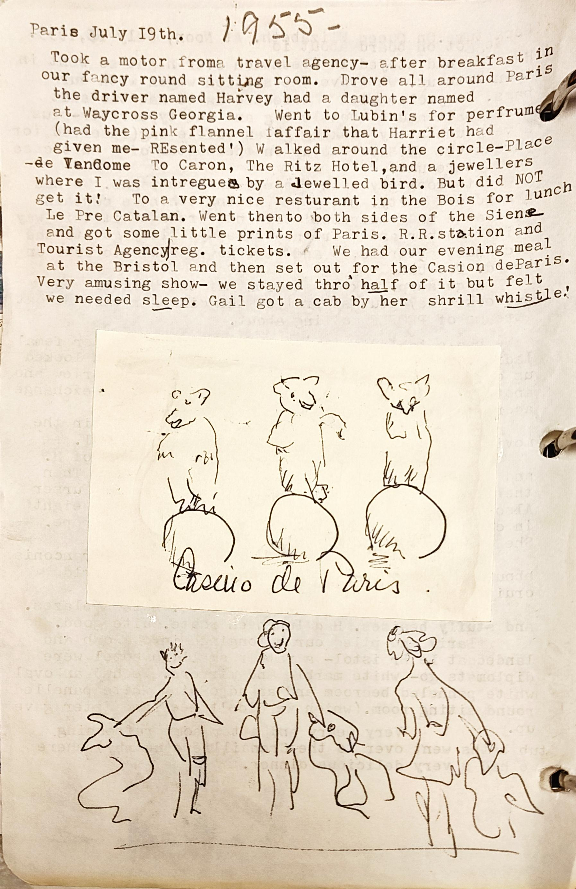

1 Took a motor froma travel agency- after breakfast in
2 our fancy round sitting room. Drove all around Paris
3 the driver named Harvey had a daughter named
4 at Waycross Georgia. Went to Lubin's for perfrume
5 (had the pink flannel iaffair that Harriet had
6 given me- REsented') W alked around the circle-Place
7 de Ven6ome To Caron, The Ritz Hotel, and a jewellers
8 where I was intregues by a Jewelled bird. But did NOT
9 get it! To a very nice resturant in the Bois for lunch
10 Le Pre Catalan. Went thento both sides of the Siense
11 and got some little prints of Paris. R.R.station and
12 Tourist Agency\reg. tickets. We had our evening meal
13 at the Bristol and then set out for the Casion deParis.
14 Very amusing show- we stayed thro' half of it but felt
15 we needed sleep. Gail got a cab by her shrill whistle.'